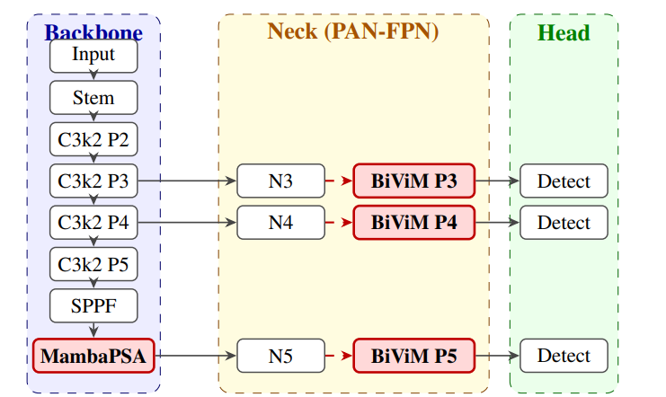
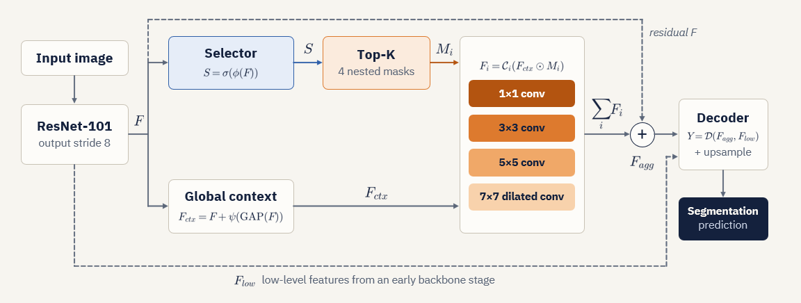
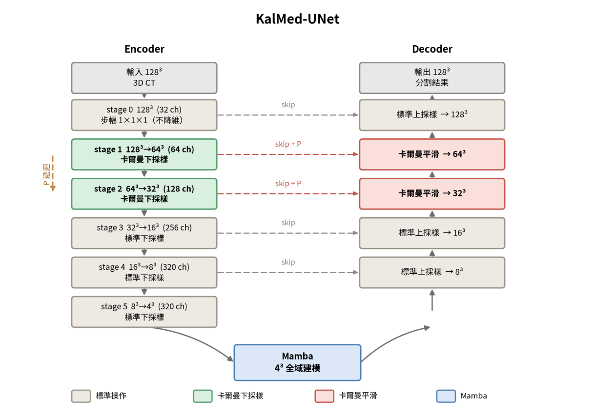

Google Scholar ↗
Sheng-Wei Chan · 詹盛惟
Explore my academic publications and citation record on Google Scholar.查看論文著作、學術引用與 Google Scholar 個人檔案。


Google Scholar
Computer vision / Learning architectures電腦視覺 / 深度學習架構
I’m Sheng-Wei Chan, an undergraduate researcher at Tamkang University. I design deep learning models for visual understanding, from efficient segmentation and document analysis to 3D medical imaging and edge deployment.我是詹盛惟，淡江大學電機系的大學部研究人員。我研究電腦視覺與深度學習模型設計，從高效分割、文件分析，延伸至三維醫學影像與邊緣部署。
AMOS Laboratory · Tamkang University · TaiwanAMOS 實驗室 · 淡江大學 · 台灣
Open a profile, or scan to take it with you.直接瀏覽，或掃描 QR Code 在手機開啟。
Sheng-Wei Chan · 詹盛惟
Explore my academic publications and citation record on Google Scholar.查看論文著作、學術引用與 Google Scholar 個人檔案。
Google Scholar
@henrychan0719
Browse research code, model implementations, and repository documentation.瀏覽研究程式碼、模型實作，以及各專案的使用說明。
github.com/henrychan0719

Accepted at IET ICETA 2026 · September 11, 2026.
IET ICETA 2026 · 2026 年 9 月 11 日接受。
YOLO26 ends its backbone with an attention block. MambaPSA replaces it with a lightweight state space module, and a placement study across the neck shows where global aggregation actually pays off in an NMS-free detector.
YOLO26 的主幹末端接的是注意力區塊。MambaPSA 以輕量的狀態空間模組取代它， 並透過 neck 各層的位置研究，找出全域聚合在 NMS-free 偵測器中究竟放在哪裡才划算。
2.9% fewer parameters, 12.1% fewer FLOPs, and 17.6% faster CPU inference on PASCAL VOC, at a cost of 0.1 mAP.
在 PASCAL VOC 上參數量減少 2.9%、FLOPs 減少 12.1%、CPU 推論速度提升 17.6%，代價為 0.1 mAP。

Accepted at IET ICETA 2026 · September 11, 2026.
IET ICETA 2026 · 2026 年 9 月 11 日接受。
G-Mamba is the core operator of DGM-Net, not a separate method. This short paper is a controlled transfer study asking whether it still works once detached: it replaces only the context head of six CNN segmentation networks, with backbone and training schedule held fixed. All six improve, and the largest gains land on attention-based heads.
G-Mamba 是 DGM-Net 的核心運算子，並非另一個獨立方法。本篇短論文是一項受控的遷移研究， 檢驗它被抽離之後是否仍然有效：只置換六個 CNN 分割網路的上下文模組，骨幹與訓練排程完全固定。 六個全部提升，而增益最大的正是基於注意力的模組。

Accepted at ISPACS 2026 · August 15, 2026.
ISPACS 2026 · 2026 年 8 月 15 日接受。
Most pixels in a street scene are easy. FoR-Net learns an importance map, hard-selects the top K% of locations, and concentrates its multi-scale reasoning there — matching CCNet and DNL with 16–22% fewer parameters.
街景影像中大多數的像素都很好判斷。FoR-Net 學習一張重要性圖，硬選擇出前 K% 的位置， 並把多尺度推理集中在那裡——以少 16–22% 的參數量達到與 CCNet、DNL 相同的準確度。

Submitted to Image and Vision Computing, 2026.
投稿至 Image and Vision Computing，2026。
Sequence models scan images in a fixed order that ignores where object boundaries fall. DGM-Net predicts centripetal flow fields and topological skeletons and uses them to steer the scan, replacing ASPP-style context heads with a linear-complexity operator.
序列模型以固定順序掃描影像，完全不考慮物件邊界實際落在哪裡。 DGM-Net 預測向心流場與拓樸骨架，並以此引導掃描路徑，用線性複雜度的運算子取代 ASPP 這類上下文模組。
80.8% mIoU on Cityscapes and 45.24% on ADE20K with 53M parameters. Under an 8 GB memory budget it still reaches 79.8%, above DeepLabV3+ (77.4%) and PSPNet (77.3%) under the same constraint.
在 Cityscapes 上 80.8% mIoU、ADE20K 上 45.24%，參數量 53M。 在 8 GB 記憶體限制下仍達 79.8%，高於同條件的 DeepLabV3+（77.4%）與 PSPNet（77.3%）。

Submitted to Pattern Recognition Letters, 2026.
投稿至 Pattern Recognition Letters，2026。
A faint stroke early in a long scan is easy to lose by the end of it. The Anti-Dilution Gate measures what state propagation removed and selectively restores stroke-level responses without amplifying the background along with them.
出現在掃描早期的一道微弱筆畫，很容易在掃描結束前就被稀釋殆盡。 Anti-Dilution Gate 量測狀態傳播移除了什麼，並選擇性地修復筆畫層級的響應，同時避免連背景一起放大。
Best average F-measure and pseudo F-measure across ten DIBCO / H-DIBCO years under a strict leave-one-year-out protocol, and best FM, Fps and PSNR on the out-of-distribution DIBCO 2019.
在嚴格的 leave-one-year-out 協定下，於十個 DIBCO / H-DIBCO 年份取得最佳平均 F-measure 與 pseudo F-measure； 在分布外的 DIBCO 2019 上，FM、Fps 與 PSNR 皆為最佳。
This page lists selected work. A complete record is available on Google Scholar.
本頁僅列出部分研究成果，完整清單請見 Google Scholar。
Four capstone projects in 3D medical imaging, edge object detection, and neural lithography. Explore the methods, measured results, and complete reports.
四項專題涵蓋三維醫學影像、邊緣物件偵測與神經微影模擬，整理方法設計、實驗成果與完整報告。

01 3D medical image segmentation三維醫學影像分割
Kalman Filter-Based Multi-Resolution Feature Fusion for 3D Kidney Tumor Segmentation基於卡爾曼濾波的多解析度特徵融合於三維腎臟腫瘤分割
Kalman-inspired fusion connects encoder downsampling with decoder refinement. Mean Dice improves across all five KiTS23 folds, with lower architectural cost.
以卡爾曼啟發式融合串接編碼器下採樣與解碼器精煉，在 KiTS23 五折皆改善 Dice，並降低架構成本。

02 Multi-organ segmentation & uncertainty多器官分割與不確定度
A Kalman Style Decoder with Uncertainty Quantification for Abdominal Multi Organ SegmentationSwin TransKalman 具不確定性量化之卡爾曼濾波解碼器於腹部多器官分割
Propagate features and a positive state through a Kalman-style decoder, producing both multi-organ masks and an uncertainty map for ranking segmentation errors.
以卡爾曼式解碼器同步傳播特徵與正值狀態，輸出多器官分割及可排序錯誤位置的不確定度圖。

03 Object detection & edge deployment物件偵測與邊緣部署
Latency-Oriented Lightweight YOLO for Real-Time Visual Perception on Edge Devices延遲導向輕量化 YOLO 於邊緣裝置之即時影像感知
Compare feature reuse and lightweight downsampling on Raspberry Pi 5. LDS cuts exported FLOPs by 10.9% and measured NCNN inference latency by 4.9%.
以 Raspberry Pi 5 實測比較特徵複用與輕量下採樣；LDS 的匯出態 FLOPs 降低 10.9%，NCNN 純推論延遲降低 4.9%。

04 Neural lithography & defect reliability神經微影模擬與缺陷可靠度
Image Quality Analysis and Reliability Enhancement in Neural Lithography Simulation神經微影模擬之成像品質分析與可靠度提升
Evaluate bridge and break events beyond global IoU. Physical perturbation augmentation and TopoNet improve defect recall, with explicit false-positive and image-fidelity trade-offs.
從全域 IoU 延伸至橋接與斷裂事件評估，以物理擾動增強及 TopoNet 改善缺陷召回，並量化誤報與成像品質代價。
I am a fourth-year undergraduate in the Department of Electrical and Computer Engineering at Tamkang University. I conduct computer vision and deep learning research in the AMOS Laboratory under the supervision of Professor Jen-Shiun Chiang.
Through papers and undergraduate research projects, I have gained experience in model design, implementation, training and evaluation, and academic writing. I identify research questions by comparing the literature and examining experimental observations, propose ideas, and develop them into testable models and experiments with my advisor and collaborators. My work uses CNN, Transformer, and Mamba architectures and explores the integration of state estimation with neural networks, including Kalman-inspired feature fusion for 3D organ and tumor segmentation.
My research has been accepted at ISPACS 2026 and IET ICETA 2026, and my semantic segmentation research is supported by an Undergraduate Research Grant from Taiwan’s National Science and Technology Council. I also serve as a TPC Reviewer for ISPACS 2026, reviewing research submissions.
I am currently extending my research to industrial anomaly detection, 3D point cloud semantic segmentation, and document image processing for OCR. These projects investigate how to distinguish normal variation from defects, use cross-frame memory to complement single-frame point cloud observations, and improve information retention and updates in state space models.
我目前就讀於淡江大學電機工程學系四年級，於 AMOS 實驗室進行電腦視覺與深度學習研究，指導教授為江正雄教授。
大學期間，我持續參與論文與專題研究，累積模型設計、程式實作、訓練評估與論文撰寫的經驗。我習慣從文獻比較與實驗觀察中尋找研究問題，主動提出構想，再與指導教授及合作夥伴討論，將想法落實為可驗證的模型與實驗。在方法上，我運用 CNN、Transformer 與 Mamba 等深度學習架構，也探索狀態估計方法與神經網路的結合，例如將受卡爾曼濾波啟發的特徵融合用於三維器官與腫瘤分割。
目前已有研究成果獲 ISPACS 2026 與 IET ICETA 2026 接受，語意分割相關研究亦獲國科會大專學生研究計畫補助。我也擔任 ISPACS 2026 論文審稿人（TPC Reviewer），參與研究論文的審查工作。
近期，我正將研究延伸至工業異常檢測、三維點雲語意分割，以及面向 OCR 的文件影像處理，關注如何區分正常變動與真正缺陷、利用跨幀記憶補足單幀點雲的觀測，以及改善狀態空間模型中的資訊保留與更新。
Research approach研究方法 I study how visual models extract, fuse, and update information through convolutional representations, Transformer attention, and state space sequence modeling. My designs combine geometric priors, selective computation, and Kalman-inspired state estimation, with ablation and module placement studies to examine their contribution and computational cost.我研究視覺模型如何擷取、融合與更新資訊，涵蓋卷積表徵、Transformer 注意力機制與狀態空間序列建模。設計上結合幾何先驗、選擇性運算與受卡爾曼濾波啟發的狀態估計，並透過消融實驗與模組位置比較，分析各項機制的貢獻及運算成本。
Efficient dense prediction: geometry-guided sequence modeling, hard-region learning, and difficulty-aware fusion of CNN and state space features.
高效密集預測：幾何導引的序列建模、困難區域學習，以及 CNN 與狀態空間特徵的難度感知融合。
Cityscapes · ADE20K · COCO-Stuff · PASCAL VOC 2012 · SBD
Lightweight YOLO detectors: replacing attention blocks with state space modules, and carrying the result through to edge hardware.
輕量化 YOLO 偵測器：以狀態空間模組取代注意力區塊，並將成果延伸至邊緣裝置。
PASCAL VOC 2007+2012
Foreground extraction from degraded documents — low contrast, bleed-through, and faint strokes that dissolve under long-range propagation.
從劣化文件中萃取前景——低對比、透印，以及在長距離傳播中逐漸消失的微弱筆畫。
DIBCO / H-DIBCO 2009–2019
3D organ and tumor segmentation with state space models, Transformer encoders, and Kalman-inspired feature fusion.
三維器官與腫瘤分割，研究狀態空間模型、Transformer 編碼器及受卡爾曼濾波啟發的特徵融合。
KiTS · FLARE22 · BTCV
Defect-level reliability: connect near-critical data coverage and topology-aware modeling with bridge, break, and cross-net short-risk evaluation.
缺陷層級的可靠度分析：結合近臨界資料與拓樸感知模型，評估橋接、斷裂及跨網路短路風險。
LithoBench · Ibex RISC-V
Model normal feature variation to distinguish illumination and acquisition changes from small defects.
以正常特徵的變動建模，區分光照與取像條件差異，以及真正的微小缺陷。
MVTec AD 2
Use sparse cross-frame memory to complement incomplete observations in streaming LiDAR segmentation.
以稀疏跨幀記憶補足串流 LiDAR 的不完整觀測，研究時序資訊對點雲分割的作用。
SemanticKITTI · Streaming LiDAR
A dual-stream CNN–Mamba network that adapts feature fusion to local difficulty and restores high-resolution detail for semantic segmentation.
結合 CNN 與 Mamba，依區域難度調整特徵融合，並以高解析度路徑保留語意分割細節。
Adaptive Difficulty-Aware Mamba-Spatial Network. A dual-stream encoder in which CNN and Mamba features are fused by a Difficulty-Aware Cross-Gate: the disagreement between the two streams is itself the difficulty signal, so the model relies on CNN texture where they agree and on Mamba context where they do not. Alongside it, a Stride-2 high-resolution path carries stem-layer features directly to the decoder, repairing downsampling loss structurally rather than by interpolation. Evaluated on PASCAL VOC 2012 and SBD, with a complexity stress test across input resolutions to verify linear scaling.
Adaptive Difficulty-Aware Mamba-Spatial Network。雙流編碼器架構，CNN 與 Mamba 的特徵由 Difficulty-Aware Cross-Gate 融合：兩條路徑之間的分歧程度本身即為難度訊號， 因此模型在雙方一致處依賴 CNN 的局部紋理，在意見分歧處則轉向 Mamba 的全域語義。 另設 Stride-2 高解析度路徑，將 Stem 層特徵直接帶至解碼端， 以結構方式修復下採樣造成的損失，而非依靠插值推測。 於 PASCAL VOC 2012 與 SBD 上評估，並以不同輸入解析度的複雜度壓力測試驗證線性擴展特性。
I am developing probabilistic normal-state estimation to distinguish normal appearance changes from actual defects. The model learns normal feature variation and evaluates residuals relative to that variation, with training and validation focused on robust industrial inspection.
我正研究以機率式正常狀態估計區分正常外觀變動與真正缺陷。模型學習正常特徵的變動範圍，再依此衡量偏離程度，目前正進行模型訓練與驗證，探索光照變化下的穩健檢測。
I am studying sparse node memory for streaming LiDAR segmentation. Pose alignment, geometric matching, and learned temporal updates carry information across frames and feed it back to point-level predictions. Initial ablations are in progress.
我正研究串流 LiDAR 的稀疏節點記憶，結合位姿對齊、幾何匹配與可學習的時序更新，將跨幀資訊回饋至逐點預測，以補足單幀觀測。目前正進行初步消融驗證。
I am investigating adaptive retention control in state space models, separating memory retention from information writing. The current work focuses on degraded-document binarization as preprocessing for OCR, examining how state updates preserve faint strokes during sequence modeling.
我正研究狀態空間模型的自適應記憶保留控制，分別調節既有資訊的保留與新資訊的寫入。目前以劣化文件二值化作為 OCR 前處理任務，檢驗序列建模中的狀態更新如何保留微弱筆畫。
B.S. in Electrical Engineering
電機工程學系 學士班
Data Structures · Algorithms · Operating Systems · Computer Organization · Digital Image Processing · Applications of Artificial Intelligence in Image Recognition · AI and Programming Languages · Computer Programming and Applications · Python Programming · Assembly Language
Signals and Systems · Engineering Mathematics · Probability · Circuit Theory · Electronics · Digital System Design · Logic Design · Introduction to Microprocessors · Interface Experiment · FPGA Development Platform · Physics of Semiconductors · Introduction to VLSI · Electromagnetism · Special Topics in ECE Laboratory
Calculus · Linear Algebra · Basic Engineering Mathematics · General Physics
資料結構 · 演算法 · 作業系統 · 計算機組織 · 數位影像處理 · 人工智慧圖像識別應用 · AI 與程式語言 · 程式設計實務 · Python 程式語言 · 組合語言
信號與系統 · 工程數學 · 機率學 · 電路學 · 電子學 · 數位系統設計 · 邏輯設計 · 微處理機概論 · 介面實驗 · FPGA 開發平台概論 · 半導體物理 · 超大型積體電路概論 · 電磁學 · 電機專題實驗
微積分 · 線性代數 · 基礎工程數學 · 普通物理
Reach me by email at henrychan940719@gmail.com. I am happy to talk about efficient vision architectures, state space models, or collaboration.
歡迎透過電子郵件與我聯絡： henrychan940719@gmail.com。 若有合作機會都歡迎來信。